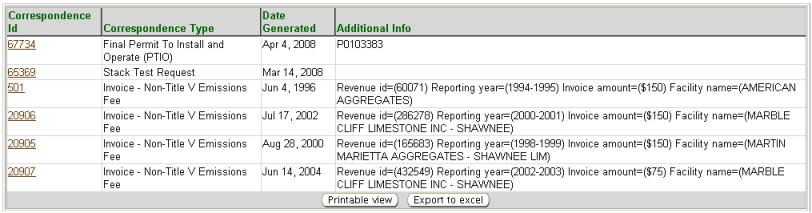

Previous Topic
Next Topic
| Facilities
|
Previous Topic |
Next Topic |
The system’s Correspondence page, available from the third-level menu of the Facilities tab, allows you to view a summary datagrid of correspondence the system generates that Ohio EPA has sent to the facility. Correspondence listed in the datagrid include, but is not limited to, TV permit renewal application reminders, Non- TV emissions fee invoices, TV applications preliminarily complete notices, etc.
The following datagrid of information will appear when you access the third-level menu, Correspondence:

If you chose to view/edit a specific item, you may click the associated Correspondence ID hyperlink found in the datagrid. This will open the Correspondence Detail page where you can edit the Additional Info or enter dates relevant to the tracking or receipt of the correspondence. To update or change information click Edit then click Save to complete the update/change or Cancel to abort the process.
Information from the Correspondence
list may be viewed,
exported to
Excel or printed. By clicking  you may view and print. By
clicking
you may view and print. By
clicking  a
pop-up will appear in which you must click Open in
order to view the
information in Excel.
a
pop-up will appear in which you must click Open in
order to view the
information in Excel.
Copyright © 1996, 2004, Oracle. All rights reserved.